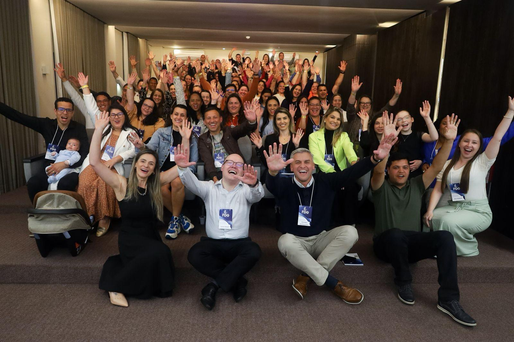
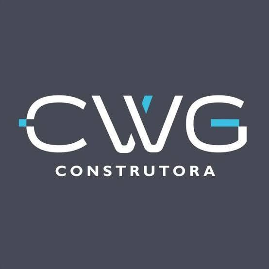
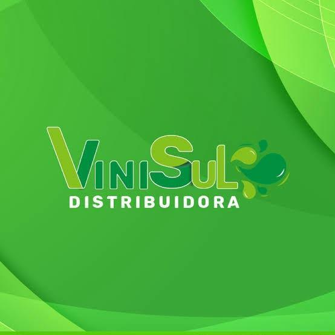
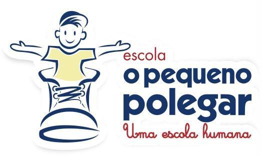
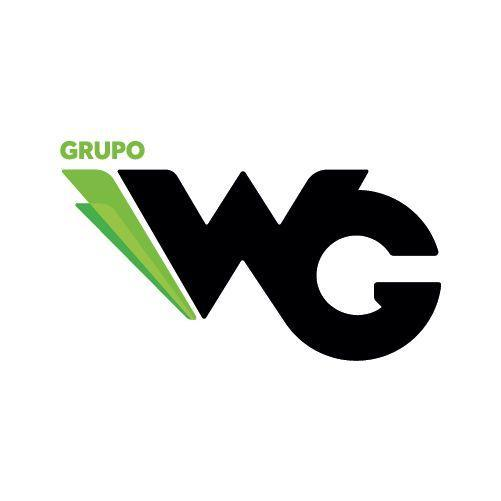
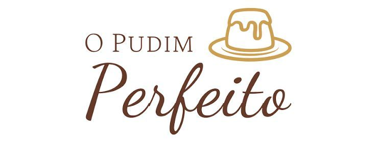

Inteligência
Consciência para escolher além do impulso.
UMA PERGUNTA PARA LEVAR COM VOCÊ
Suas decisões refletem o que você sente ou o que deseja construir?

Palestras, treinamentos e jornadas de desenvolvimento para líderes, equipes, educadores, jovens e famílias. Conhecimento aplicado para transformar pessoas, ambientes e gerações.
12 princípios. Um método próprio. Um propósito maior.O Grupo FDG tem uma base de 12 princípios, um método próprio e um propósito maior: formar pessoas e desenvolver gerações.
Inspirados em princípios bíblicos, esses fundamentos orientam nosso olhar para o ser humano, nossas escolhas e cada experiência de desenvolvimento.
Inteligência
Consciência para escolher além do impulso.
Suas decisões refletem o que você sente ou o que deseja construir?
Disciplina
Constância para transformar intenção em prática.
O que precisa se tornar constante para o seu próximo passo acontecer?
Servir
A grandeza de facilitar a vida do outro.
Quem pode avançar a partir daquilo que você tem a oferecer?
Sabedoria
Discernimento para dar direção às escolhas.
Antes de buscar uma resposta, você tem feito a pergunta certa?
Relacionamento
Uma base de vínculos que merece ser cuidada.
Como está a base que sustenta a sua vida fora do trabalho?
Amor
Empatia e cuidado que se tornam atitudes.
Como as pessoas percebem o cuidado nas suas atitudes?
Prosperidade
Uma visão de vida que vai além do dinheiro.
O que significa prosperar sem perder aquilo que mais importa?
Fé
Confiança em Deus, acompanhada de ação.
Que passo a sua confiança precisa encontrar na prática?
Honra
Reconhecimento que começa na gratidão.
O que suas atitudes revelam sobre quem você reconhece e valoriza?
Verdade
Coerência para construir relações de confiança.
O que permanece quando discurso e atitude são colocados lado a lado?
Perdão
Uma decisão que abre espaço para seguir em frente.
O que precisa deixar de ocupar o seu presente para você avançar?
Exclusividade
Uma vida alinhada com Deus e com o propósito.
Suas escolhas estão alinhadas com o propósito que orienta a sua vida?
Uma primeira reflexão. A profundidade se vive na jornada.
A essência do Método FDGDesenvolvemos líderes, fortalecemos equipes e transformamos ambientes organizacionais.
Soluções para sua empresaFortalecendo educadores, jovens e famílias para transformar gerações.
Soluções para a vidaComo influenciar, desenvolver pessoas e transformar resultados.
Conhecer programaComo falar, ouvir e conectar-se.
Conhecer programaInteligência emocional para professores: cuidar de quem cuida.
Conhecer programaUma jornada de desenvolvimento humano que conecta compreensão, experiência e aplicação.
Compreendemos a realidade, as necessidades e os desafios de cada grupo.
Experiências e atividades conduzidas por profissionais especializados.
O conhecimento se transforma em comportamentos e práticas do dia a dia.
Avaliação da evolução e continuidade do desenvolvimento.
Onde você quer começar a desenvolver uma nova perspectiva?
O que você precisa tornar constante para viver a mudança que deseja?
Inteligência e disciplina convidam a olhar para as próprias escolhas antes de buscar novos resultados.
Descubra o Método FDGUm convite à reflexão. Suas escolhas não são enviadas nem armazenadas.
Comportamento humano e liderança
CEO e fundador do Grupo FDG. Atua em comportamento humano e liderança.
Conheça o perfilDesenvolvimento humano, PNL e inteligência emocional
Especialista em Desenvolvimento Humano, PNL e Inteligência Emocional.
Conheça o perfilLiderança, inteligência interpessoal e comunicação eficaz
Instrutor certificado pela Fundação Napoleon Hill. Especialista em Liderança, Inteligência Interpessoal e Comunicação Eficaz.
Conheça o perfilPsicologia, saúde emocional e desenvolvimento humano
Psicóloga. Atua em Saúde Emocional e Desenvolvimento Humano.
Conheça o perfil






Explore as referências de eventos e programas do Grupo FDG.
Eventos e experiênciasLiderança, comunicação, educação e família: acesse os conteúdos e as comunidades FDG.
Explorar conteúdosConte o seu desafio. Vamos construir uma solução para o seu contexto.